Pantalla de inicio
Pantalla principal del sistema en la cual el usuario inicia sesión.
Credenciales del administrador del sistema
Login: admin
Password: GTOadmin
Módulo de configuración
Opción para establecer las variables básicas para el correcto funcionamiento del sistema. Está dividida en 3 categorías:
-
Datos del centro de atención
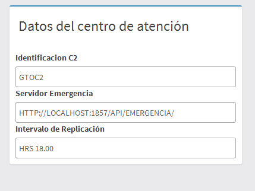
- Identificador del c2, es un campo alfanumérico de 5 caracteres de largo.
- La dirección del servidor de emergencia es donde el sistema se conectara para obtener incidentes nuevos.
- El intervalo de replicación es el tiempo en el que el servidor intentara replicarse al C5 u otro servidor especificado.
-
Servidores de replicación
Representa una lista de los servidores al cual el C2 intentara conectarse, tanto para la replicación de la data, como para obtener datos de antecedentes.
-
Delegaciones
Lista con las delegaciones del municipio donde se encuentra el C2, es recomendable configurarlas solo la primera vez que se accede al sistema, para evitar problemas de concurrencia.
Módulo de usuarios
Lista con las delegaciones del municipio donde se encuentra el C2, es recomendable configurarlas solo la primera vez que se accede al sistema, para evitar problemas de concurrencia.

Este módulo solo puede acceder el administrador del sistema.
Si se desea agregar un usuario para que este pueda acceder al sistema se debe hacer click al botón “Agregar usuario”
Los campos Usuario y Contraseña contendrán la información necesaria para que este usuario pueda ingresar al sistema. Los campos Nombres, Apellidos y el botón Cargar permiten suministrar información personal del usuario. El campo Tipo de Usuario permite asignar roles al usuario que se esta registrando.
Al darle click sobre el campo se despliega el listado de roles, una vez seleccionado uno, se puede escribir el nombre de otro rol o hacer click de nuevo sobre el campo para agregar un rol nuevo
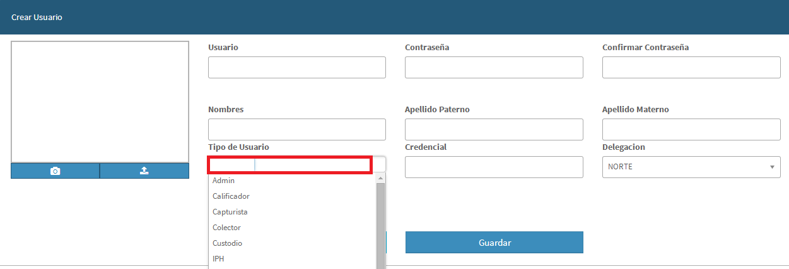
Al terminar de seleccionar los roles y al hacer click en Guardar el usuario se creará.
Módulo de capturísta
El usuario previamente creado debe ingresar al sistema con su nombre de usuario y contraseña (que fue creado por el administrador).
Una vez ingrese su nombre de usuario y contraseña se mostrará las opciones de menú permitidas por el administrador.
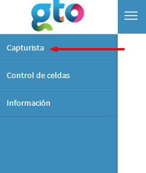
Al hacer click en la bandeja del capturador Se mostrará un listado con todos los incidentes registrados, el botón de némesis se conectará al sistema de emergencia para extraer los casos pendientes y se mostrará en una lista al seleccionar un caso se pueden ir agregando detenidos al folio, a medida que vayan ingresando al centro de detención.
Cuando existan detenidos dentro del centro de detención que no estén asociados a una emergencia, se puede ingresar al sistema mediante el botón “Agregar Incidente”, el cual permitirá crear un caso especial para dicho detenido y no aceptará más de un (1) detenido.
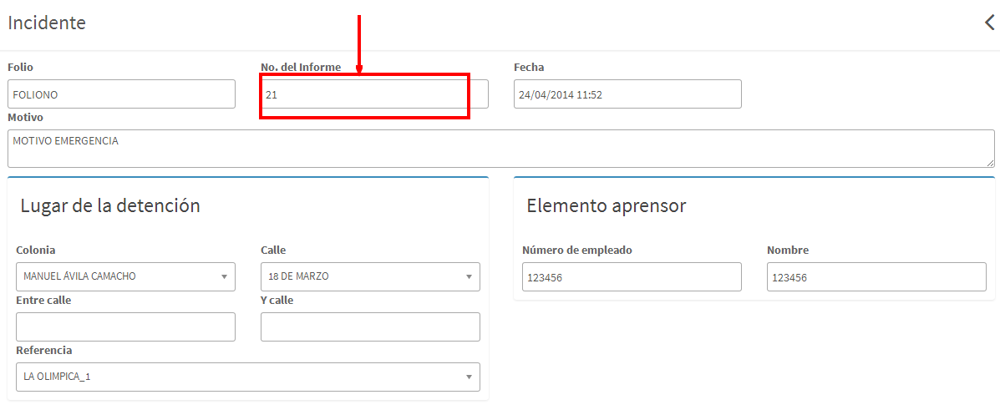
La primera parte son los datos del incidente, en caso que el mismo venga del sistema de emergencia no hay necesidad de llenar estos campos.
Los datos del detenido se pueden tomar una foto con la cámara web o se puede elegir una del sistema de archivos, en este caso la foto debe ser mayor de 400x400 px.
Se puede buscar un detenido tipeando su nombre, apellidos o alias en el campo de búsqueda y se mostrara una lista con los posibles detenidos que coincidan con las palabras claves introducidas.
Al seleccionarlo los datos básicos de la persona serán cargados automáticamente.
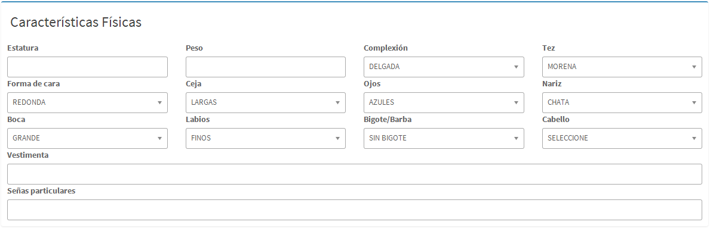
El capturista deberá seleccionar las características físicas de la persona, siendo los campos estatura, pero, vestimenta y señas particulares; campos libres. El resto de los campos provienen de los catálogos.
Por último se seleccionan las posibles faltas y/o delitos de los que se acusan al detenido, pudiendo eliminar a voluntad en caso de agregar por accidente; esta opción es solo permitida en este paso.
Módulo de revisión médica
Para ingresar al área de revisión médica, se debe ingresar con un usuario con credenciales de médico. En caso de que la delegación no posea médicos registrados este módulo puede ser omitido durante el proceso.
La bandeja medica muestra todos los casos que se encuentran activos dentro del centro de detención, muestra el nombre del detenido y la fecha en la que fue registrado. Para atender a la persona hay que presionar el botón Informe, el cual nos conducirá al formulario de atención médica.
Cuando el detenido ya ha sido atendido, se podrá observar una etiqueta con la fecha y hora en la que fue atendido y se habilitara botón de certificado, el cual permite imprimir el informe médico asociado al detenido.
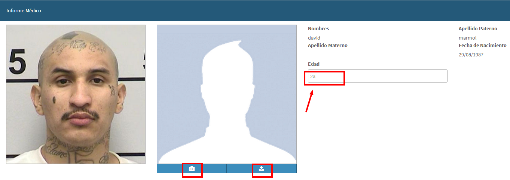
La primera parte del informe médico es los datos personales del detenido. El medico podrá cargar una foto del detenido para asociarle al informe. El campo edad puede ser editado por este usuario en caso de que lo considere conveniente.
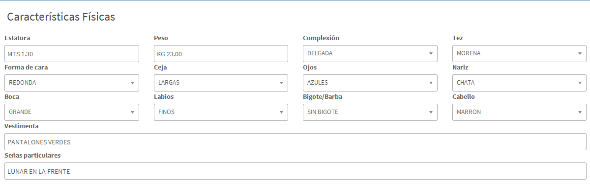
Se presentan las características físicas obtenidas durante la barandilla y puede ser editada si lo considera conveniente.
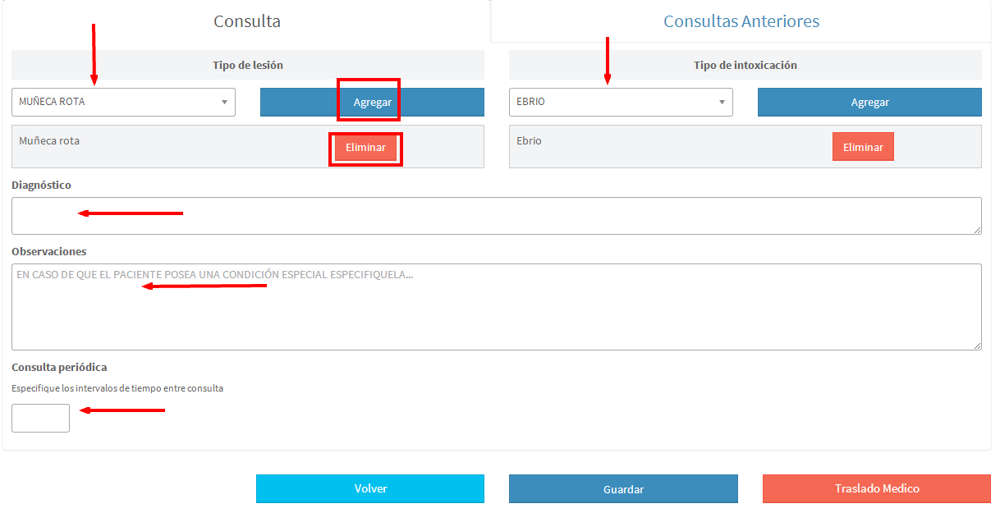
El área de consulta permite al doctor agregar diferentes tipos de lesiones e intoxicaciones que muestre el detenido.
Es obligatorio indicar un diagnóstico y es posible crear observaciones.
El campo consulta periódica indicara si el paciente requiere de atención cada cierto tiempo y será usado para el sistema alertar cada vez que se cumpla dicho tiempo.
El área de consultas anteriores permite ver las consultas previas hechas al detenido durante su estadía en la delegación.
Bandeja de calificación
El juez de la delegación es el único con acceso a esta bandeja, donde podrá calificar los detenidos uno a uno.
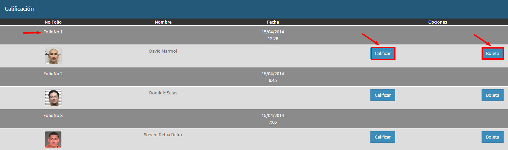
La bandeja está dividida en dos etapas, la principal donde el juez podrá elegir para calificar a cualquier detenido que se encuentre dentro del centro de detención y una vista alterna donde indicara la salida a los detenidos cuya sentencia haya sido cumplida.
Al presionar el botón calificar, se procederá al formulario de calificación
Primera parte información general sobre el detenido, estos datos son referenciales para el juez calificador y solo podrá consultarlos sin posibilidad de editarlos.
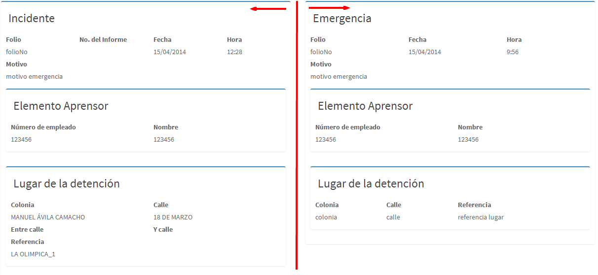
Datos del incidente, del lado izquierdo se presenta los datos obtenidos por el capturista y del lado derecho los recibidos por el sistema de emergencia. De esta manera el juez podrá juzgar si los datos coinciden o si hay disparidades entre las versiones declaradas.
Se muestra una pestania con los antecedentes de la persona en caso de ser reincidente.
El juez ve un listado con las posibles faltas y delitos asociadas al detenido, podrá agregar nuevas en caso de considerarlo necesario y para eliminar deberá justificar sus razones.
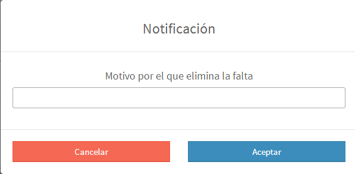
Para terminar la calificación el juez deberá asignarle el monto en multa a ser cobrado o el tiempo de detención, en caso de que ambas opciones sean asignadas, se asumirá que el detenido tendrá una multa en metálico adicional a un tiempo detenido. El juez tambien podra asignar el detenido a otra autoridad que este registra en el catalogo de autoridades.
Caso condena cumplida: cuando a un detenido se le cumple el tiempo asignado dentro del centro de detención, al juez le saldrá una alerta indicándole que tiene que soltar a dicho detenido, hasta que el juez no autorice la salida de dicha persona, no podrá seguir calificando o usando el sistema.
Al aceptar la notificación, será redireccionado a la bandeja de calificación, pero la misma solo mostrara los casos que necesiten autorización para la salida del centro de detención.
Al presionar el botón “Dar salida” se autoriza el caso para la bandeja de salida.
Bandeja de resguardo de pertenencias
Desde el momento que son ingresados a la delegación la persona detenida puede pasar por el punto de resguardo de pertenencias donde serán inventariadas sus pertenencias personales.
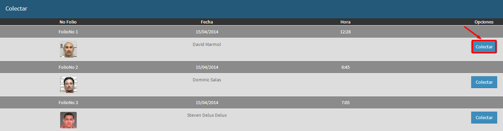
Al presionar el botón “Colectar” se mostrara el formulario para la recolección de objetos personales.
Se va agregando cada objeto uno por uno, indicando que es el objeto requisado, una breve descripción y la cantidad de dicho objeto. Cada vez que se presiona el botón de bandeja se agrega una nueva línea para ingresar un nuevo objeto.
Módulo de custodio
Esta bandeja permitirá llevar un registro de las celdas donde son ingresados los detenidos.
Se visualiza el folio del incidente, el nombre del detenido con su foto, tiempo que lleva recluido la persona en la delegación, cuanto fue el tiempo a permanecer detenido y la celda en la que se encuentra actualmente. Al presionar el botón “Mover” o “Asignar” se puede elegir una nueva celda para el detenido.
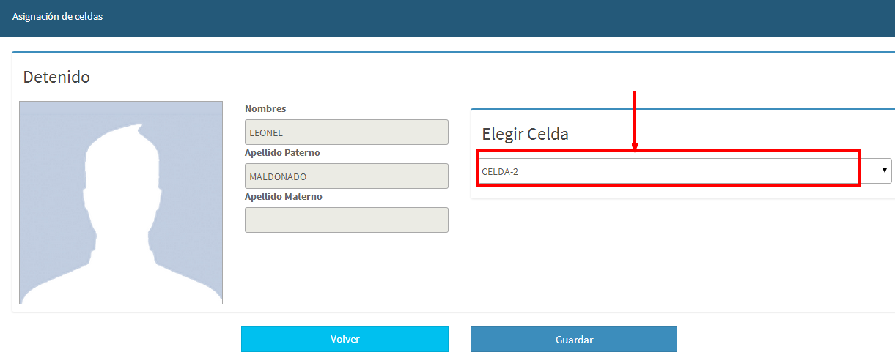
Se muestra el nombre del detenido con su respectiva foto y se procede a elegir en que celda se desea ingresar a la persona.
Módulo de caja
Presenta una bandeja donde salen aquellos detenidos que una vez calificados por el juez se les haya asignado un monto a pagar, presionando el botón “Pagar” se creara el recibo de pago automáticamente y se podrá imprimir. Después de este paso el juez podrá autorizar la salida del detenido.
Módulo de salida
Muestra los detenidos que hayan pagado la multa o sido indicados por el juez después de haber cumplido la condena a la que fueron sometidos.
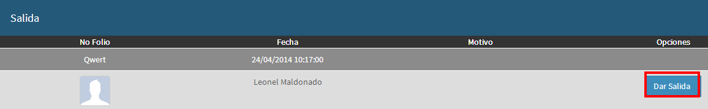
En el formulario de salida, se detallaran los datos personales del detenido, las faltas por las que fue juzgado y se indicara el motivo por el cual se le está permitiendo la salida de la delegación. Es cargado automáticamente por el sistema, pero puede ser indicado manualmente en caso que se necesario.
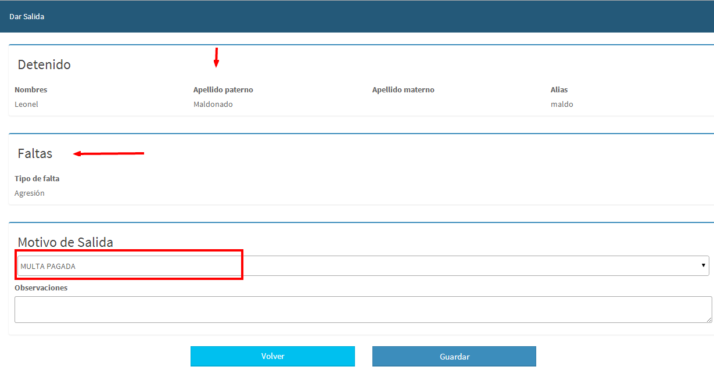
Al presionar el botón guardar el detenido ya puede ser considerado como en libertad.
Módulo de IPH
Este módulo es administrativo y no interfiere en el flujo del detenido.
El oficial que realizo la detención deberá completar estos datos empezando por la explicación detallada de los hechos.
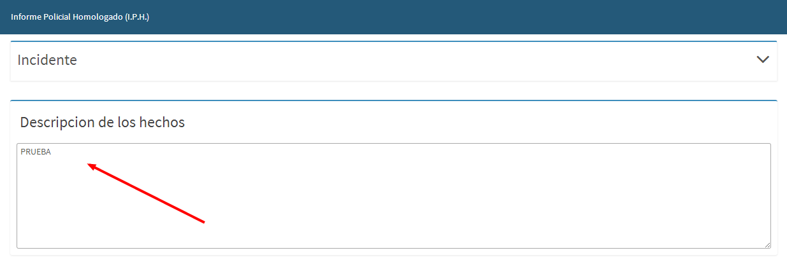
Puede ver los detenidos del folio y consultar sus datos y fotos
Datos de Armas y vehículos involucrados: en caso de poseer se puede dejar en blanco sin afectar la estructura del informe.
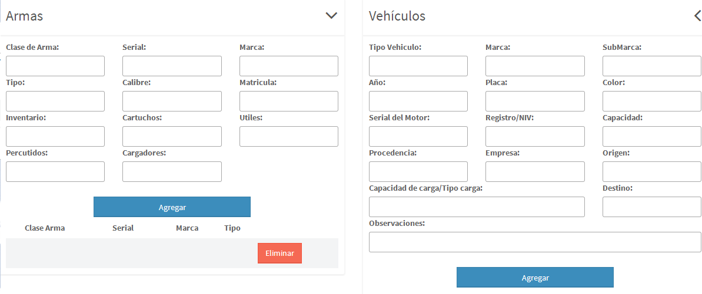
Cuando otro tipo de evidencia está involucrada se puede utilizar la sección de otro, que posee campos genéricos con los cuales puede agregar cualquier tipo de dato.

Al presionar guardar, el usuario será redirigido a la bandeja donde podra imprimir el informe final de I.P.H